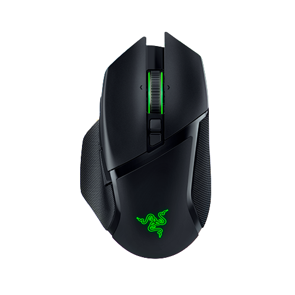
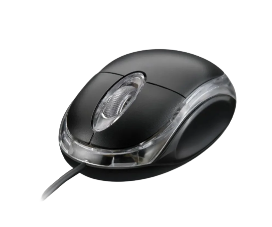
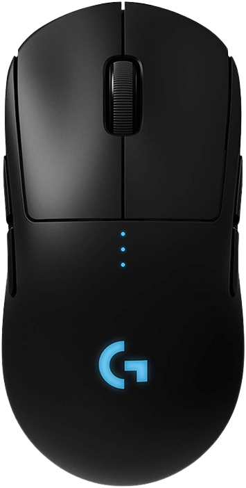

Desvendando a Tecnologia
Desvendando a Tecnologia
Mouse
Mouses são dispositivos de entrada que permitem aos usuários interagir com computadores e outros dispositivos eletrônicos. Eles funcionam através de sensores ópticos ou laser que rastreiam o movimento do mouse em uma superfície, convertendo esse movimento em movimento do cursor na tela. Os botões do mouse e a roda de rolagem (scroll) também são usados para clicar, arrastar e rolar, permitindo que os usuários executem uma variedade de ações. Mouses podem ser com fio ou sem fio e vêm em várias formas e tamanhos para atender às preferências dos usuários. Tem a versão com fio usb, ou sem fio bluetooth.


